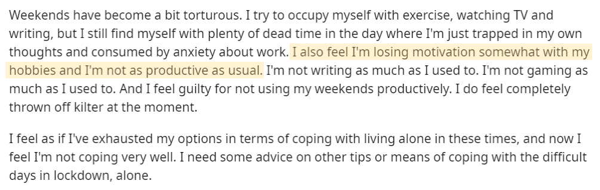

InsuLearn
Reimaging Diabetes Education
Overview
Diabetes Technology like continous glucose monitors (CGM) and Insulin Pumps makes huge amounts of data available to people with diabetes. This data allows people to understand how diabetes affects their body and understanding this data can lead to a more effective diabetes management. However, there is little support and a lack of tools to help people with diabetes understand essential diabetes concepts.
Our mission was to make diabetes, specifically the relationship between insulin and glucose, easier to understand and manage. We wanted our project to focus on allowing people to see their diabetes in a clear, digestible way, and therefore focused on interactive visualizations as a learning tool.
Secondary Research
Our team began our research phase by conducting secondary research and online community observations where members discuss their situation isolating at home. From our findings, we saw an increase in the need for mental health support.
What we know:
- Contagion concerns can worsen anxiety and ‘contamination obsessions’ for those with obsessive/compulsive issues
- Ultimate consequence to uptick in mental health issues due to this crisis: rise in self-harm/suicide
- Disruption to routine, sleep disturbances, cutoff of social contact seen to negatively impact individuals’ health
- Social isolation and uncertain times can cause mental health to worsen, or disorders to return
- Humans are social creatures who thrive on contact with others
Online Observation on Communities such as: reddit, mental health message boards/forums, facebook groups, etc.

Many people have posted similar anecdotes to reddit pages (threads such as r/living-alone, etc.), detailing their experiences in isolation. Many, like this reddit user, expressed sentiments of guilt for unproductivity as well as their wishes for coping mechanisms, specifically methods of warding off negative, unwanted thoughts (stemming from whatever: general anxiety/depression, restlessness, boredom, and loneliness).
User Research
The team then created an online questionnaire for individuals who have adapted to home isolation to find opportunities for an application. Through this questionnaire, we aimed to gather information regarding how people are handling social isolation in the context of mental health. We wanted to learn about the resources people are using to cope, and how this affects their daily activities and mindset.
 Contact ->
Contact ->